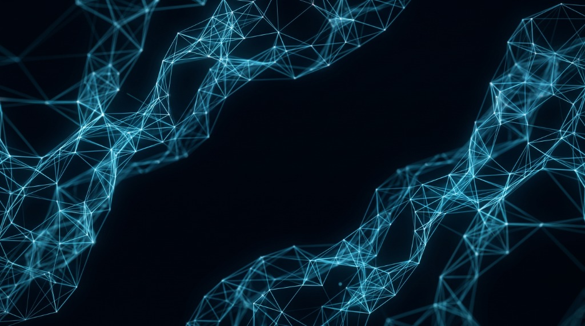

Bilgisayar Mühendisliği, gerçek zamanlı endüstriyel telemetri, yapay zeka destekli bilgisayarlı görü ve yüksek performanslı yazılım mühendisliği çözümleri.
Bu bileşen tamamen harici kütüphanesizdir (Zero Dependencies). HTML5 Canvas ve Vanilla JS ile 60 FPS akıcılıkta çalışır.
Arka planda yüksek çözünürlüklü görsel (img), üzerinde şeffaflaşan Canvas petekleri ve en üstte tıklanabilir butonlarınız yer alır.
Nokta uçlu (pointy-topped) altıgen geometrisi ile ekran pürüzsüz biçimde döşenir. Kenar sızıntılarını önlemek için sub-pixel mikron ölçeklemesi uygulanmıştır.
touchstart, touchmove ve touchend olayları farenin olmadığı dokunmatik ekranlarda aynı yumuşak geçişi sağlar.
const CONFIG = {
// 1. Arka planda ortaya çıkacak görselin yolu / URL'si
bgImage: 'projenizin-resmi.jpg',
// 2. Petek altıgenlerin yarıçapı (piksel)
hexRadius: 38,
// 3. Farenin etki alanı yarıçapı (piksel)
mouseRadius: 180,
// 4. Yumuşak sönümleme ve geri dönüş hızı (Lerp factor)
lerpSpeed: 0.08,
// 5. Efekt modu: 'both' (şeffaflaşma + küçülme), 'opacity', veya 'scale'
revealMode: 'both',
// 6. Üst katman petek dolgu rengi (Sayfa arka planı ile birebir)
hexFillColor: '#060709',
// 7. Tel kafes (wireframe) kontur rengi ve opaklığı
hexStrokeColor: '#00f2fe',
hexStrokeAlpha: 0.22,
hexStrokeWidth: 1.0,
// 8. Fareye en yakın peteklerde aktif neon ışıma
activeGlowColor: '#00f2fe',
activeGlowAlpha: 0.65
};